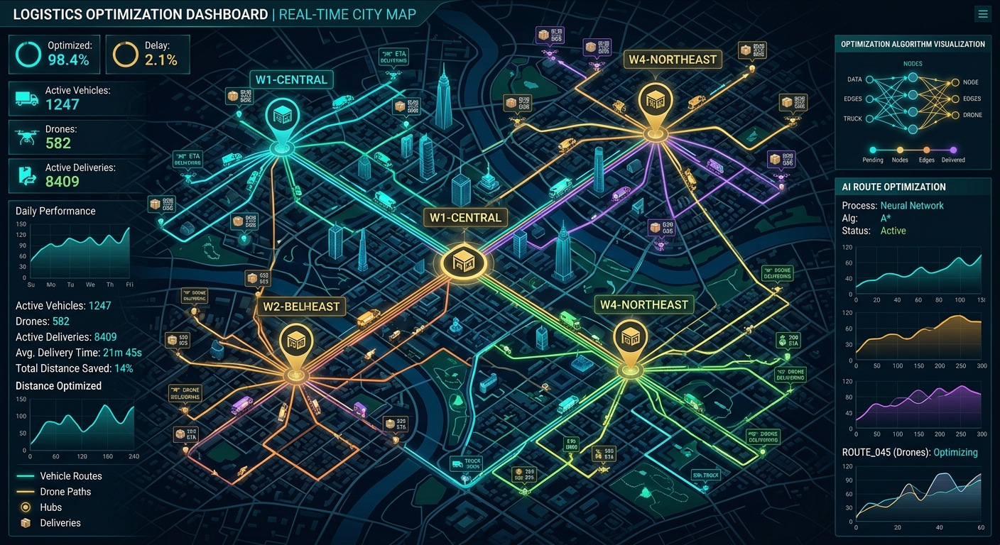
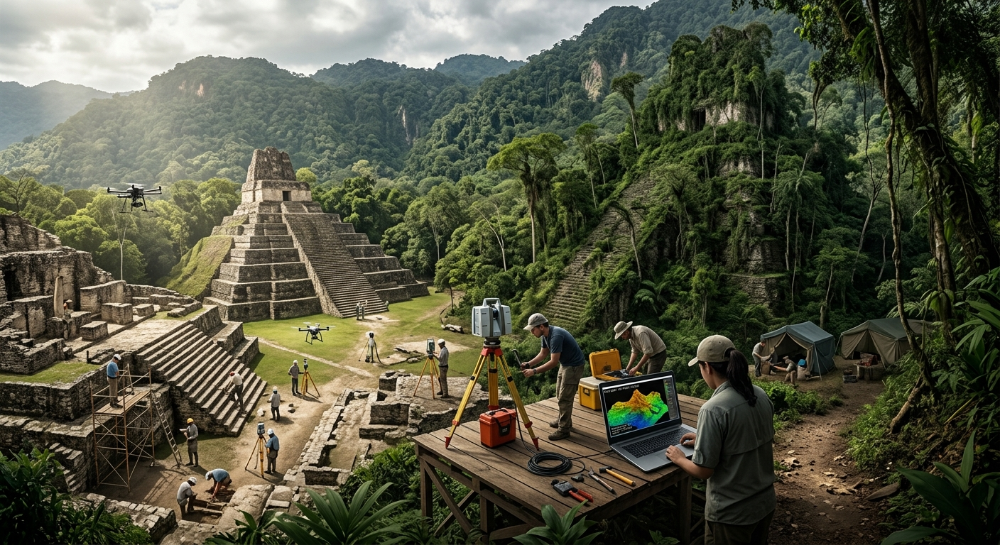
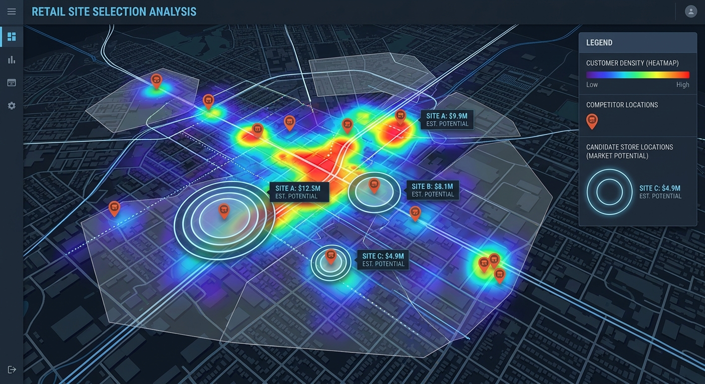
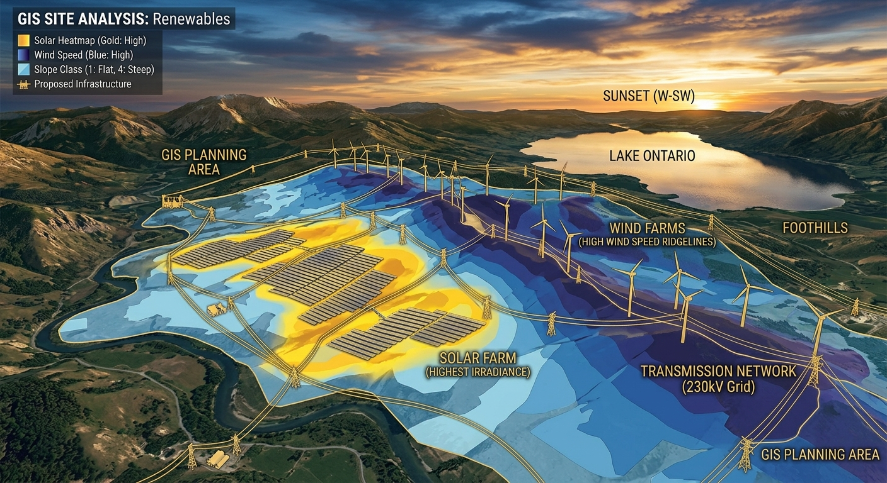
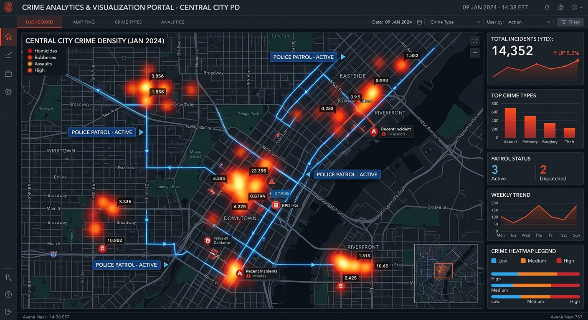

如果说 GIS 的"硬件"是卫星、计算机、传感器，GIS 的"软件"是 ArcGIS、QGIS、PostGIS，那么 GIS 真正的生命力，藏在它"被用起来"的那一刻：当一张地图让救援队找到被困者、当一组热点图让警察提前布控、当一次 NDVI 计算帮农民多收一袋粮——这时候 GIS 才从一门学科，变成了一种看世界的方式。
本章不再纠结于算法与数据结构，我们直接走进现场。以下 13 个领域，每一个都有明星案例、有代表性技术、有正在发生的变化。读完你会发现：GIS 并不是"某个行业的工具"，它更像是水、电、网络一样的基础设施——几乎所有需要回答"在哪里"的问题，都离不开它。
本章导读
每个应用卡片包含：真实案例描述 + 示意图片 + 案例视频链接 + 相关技术栈。视频卡片不嵌入播放器，点击后在新标签页打开 B 站或 YouTube。
01. 智慧城市与城市规划
把一座城市装进计算机，让每一栋楼、每一条路、每一个井盖都"在线"。
在中国，深圳前海合作区是第一批采用全流程 GIS+BIM 协同规划的片区之一。整个前海 15 平方公里的地下管廊、地面道路、地上建筑被整合到同一个三维数据底板里——规划师在电脑上拖动一栋楼的位置，就能实时看到它对日照、风向、交通流的影响。类似地，雄安新区在规划阶段提出"先地下、再地上，先数字、再实体"，本质上就是先建一座"数字雄安"，让所有市政设施先在 GIS 系统里跑通，再落到现实的土地上。这种做法极大减少了后期返工，也让"千年大计"的每一次修改都有迹可循。
更日常的应用是"城市运行一网统管"。北京、上海、广州等特大城市都建立了基于 GIS 的城市运行中心：把 12345 热线投诉、地铁客流、气象雷达、摄像头识别结果实时叠加到一张地图上，哪个路口积水、哪段地铁满载、哪栋老楼电梯故障，指挥员一眼就能看到。这背后是矢量路网、栅格影像、BIM 模型、物联网流数据的深度融合，是 GIS 从"制图工具"升级为"城市操作系统"的典型代表。

智慧城市 GIS 底座：把城市装进同一个坐标系
02. 应急管理与灾害响应
地震、洪水、森林火灾——GIS 让救援从"盲人摸象"变成"上帝视角"。
2008 年汶川地震是中国 GIS 应用史上一次关键的转折。地震发生后，国家测绘局、中科院遥感所、民政部联合调集高分辨率卫星、无人机与航空影像，在震后 72 小时内完成了重灾区的影像获取和滑坡体范围提取。救援指挥部根据 GIS 叠加的道路、滑坡、村庄位置信息，决定空投和徒步救援路线；灾后重建阶段，地质灾害易发区评价图被用来确定哪些村庄必须异地重建。从那之后，中国几乎每一次重大自然灾害都会启动"卫星+无人机+GIS 平台"的标准化响应流程。
2020 年武汉洪涝和 2021 年河南郑州"7·20"暴雨中，GIS 平台发挥了更精细的作用：水文模型结合 DEM（数字高程）推算淹没范围，路网数据用于找"最后一公里"可通行路线，民政数据用于圈定孤岛社区，甚至社交媒体的 LBS 求助帖都被实时打点到地图上，供救援力量就近响应。在国际上，OpenStreetMap 的 HOT（Humanitarian OpenStreetMap Team）项目会在灾后几小时内动员全球志愿者用无人机影像标注倒塌建筑与道路阻断，已经成为红十字会等机构救援决策的标配数据源。

应急指挥的"一张图"——把灾情、救援资源、地形全放进同一个视窗
03. 精准农业
NDVI、土壤湿度、气象、卫星影像——把农田变成数据田。
精准农业的核心，是把一块 100 亩的地切成 10×10 米的小网格，每个网格的长势、含水量、养分状况都被量化。最常用的指标之一是 NDVI（归一化植被指数），它通过卫星影像的红光波段与近红外波段计算得到：健康作物反射大量近红外光而吸收红光，NDVI 接近 1；而干旱或病害区域 NDVI 会明显下降。这种差异肉眼几乎看不出来，卫星却能在几百公里高空一览无余。
黑龙江北大荒、新疆兵团、东北玉米带等大规模农业区早已用上了基于 Sentinel-2 和国产高分卫星的 NDVI 巡田系统：农场主打开手机 APP 就能看到今天地里哪一片"偏黄"，需要无人机补施氮肥；到了收获季，结合历史 NDVI 曲线还能预估单产偏差。更进一步，约翰迪尔等农机厂商推出的"变量施肥"拖拉机会读取一份 GIS 处方图（Prescription Map），边走边调整每一行的化肥量——在不同位置精确到克级的投放。结果就是：同样的地，更少的水肥投入、更高的产量、更少的污染。

NDVI 处方图让农机按需施肥——GIS 在田野里的日常
04. 公共卫生与流行病学
GIS 的祖师爷其实是一位医生——John Snow 用地图阻止了一场瘟疫。
1854 年伦敦 Soho 区爆发霍乱，数百人丧生。医生 John Snow 在地图上把每一例死亡病例标成一个小黑条，逐条累积后，一个震撼的图案浮现出来：死亡病例密集集中在宽街（Broad Street）的一口公共水泵周围。Snow 说服政府卸掉了这口水泵的把手，疫情随即缓解。这张后来被称为"Snow 地图"的手绘作品，被普遍认为是现代空间流行病学、现代 GIS 分析的起点——它第一次证明了"把数据放到地图上"能让原本隐藏的因果关系显形。
170 年后的 2020 年，约翰斯·霍普金斯大学的 Lauren Gardner 团队在疫情初期搭建了一个基于 ArcGIS Online 的全球 COVID-19 仪表盘。这个看板在几个月内被全球浏览数十亿次，成为各国政府、媒体、普通公众了解疫情动态的首要入口。它的技术栈看似简单——ArcGIS Feature Layer + Dashboard 模板——却示范了一件重要的事：当数据足够及时、可视化足够清晰、地理维度足够精细，GIS 可以成为公共卫生决策中不可替代的一环。疫情之后，从核酸点位查询到"时空伴随者"排查，GIS 的公共卫生应用进入了普通人的生活。
05. 物流与外卖
美团、饿了么、Uber、DoorDash——外卖/打车的核心是一道道 GIS 计算题。
你点一份麻辣烫从下单到送达的 30 分钟里，美团的系统至少做了三件和 GIS 直接相关的事：第一步是派单，根据骑手当前位置、历史送达速度、商家出餐时间预测，把订单指派给最合适的骑手；第二步是路径规划，在骑手已接多个订单的情况下用运筹算法（VRP）求一条近似最优的送达顺序；第三步是ETA 预估，通过历史路网速度和实时天气反馈告诉你"大约还有 12 分钟"。每一步都离不开道路网络、POI、GPS 轨迹这些最经典的 GIS 数据。
在国际上，Uber 因为面对全球数十个城市的派单问题，发明了一种特别的空间索引——H3 六边形网格系统。他们把全球表面切成一层层逐级细化的六边形格子（比如一个 H3 level 9 的格子大约 0.1 km²），每个订单、司机、行程都被映射到格子 ID 上，这样就能把本来需要"经纬度附近搜索"的复杂查询，转化为"同一个格子或邻居格子"的简单哈希。H3 后来开源，成为外卖、打车、共享单车、物流行业最流行的空间索引方案之一。

H3 六边形网格：让"附近的订单/司机"成为一次哈希查询
06. 生态环境监测
碳汇、生物多样性、水质——GIS 是生态保护的"数据听诊器"。
"碳达峰、碳中和"目标的提出，让碳排放监测成为 GIS 的高光领域。科学家用欧洲航天局的 Sentinel-5P 卫星反演大气中的 NO₂、CH₄、CO₂ 浓度，再结合能源基础设施位置、工厂 POI、交通流量数据，就能定位到"哪个工业园的排放异常偏高"。Global Carbon Atlas、Climate TRACE 等国际项目已经能以月度甚至周度发布全球排放热力图，为国际气候谈判提供独立的证据来源。
在生物多样性方向，GBIF（全球生物多样性信息平台）汇集了来自科研机构、公民科学、博物馆标本的数十亿条物种出现记录，每一条都带有经纬度。研究者可以用 MaxEnt 等物种分布模型，结合温度、降水、土地覆盖栅格，反推某种鸟类或植物的潜在栖息地——这对自然保护区划定非常关键。水质方面，Sentinel-2 的红边波段可以估算湖泊叶绿素浓度，从而监测蓝藻水华；中国太湖、滇池的水华预警系统都采用了这一技术。这些应用共同构成了"用 GIS 观察地球脉搏"的实践。
07. 智慧交通与自动驾驶
从高德导航到 Waymo，地图的精度每提高一个数量级，整个交通方式都会被重塑。
普通导航用的是"SD Map"（Standard Definition Map），精度在米级，核心任务是告诉你"下一个路口右转"。而自动驾驶需要的是"HD Map"（High Definition Map），精度要求在 10~20 厘米级，要包含车道线、路边缘、标志牌、红绿灯、可行驶区域等细粒度要素。特斯拉选择不依赖 HD Map，走纯视觉路线；而 Waymo、百度 Apollo、小鹏 XNGP 等厂商则依托高精地图构建了"熟人道路"的安全冗余。一张高精地图的采集成本极高：需要装备激光雷达、相机、IMU、GNSS 的专业数据车以正常速度跑一遍道路，再通过 SLAM 融合、AI 自动标注、人工审核，最后生成标准化的地图产品。
在交通流预测方面，图神经网络（GNN）最近几年成为主流。把路网本身当作一张图——节点是路段或交叉口，边是连接关系——再给每个节点接上历史通行速度，就能用 GNN 预测未来 5/10/30 分钟的拥堵状况。高德、百度、滴滴都在用类似的技术做 ETA 和动态路径规划。这些能力又会反过来影响城市交通管理：信号灯配时、拥堵收费、公交优先——都是典型的 GIS+AI 应用。
08. 不动产与地籍管理
第三次全国国土调查：一次动用全国的 GIS 工程。
地籍管理听上去很传统，但它其实是 GIS 最早、也最大规模的应用。一块土地的所有权边界、用途、面积、权利人信息——这些数据被存储在 GIS 的"宗地数据库"里，任何时候都可以查询、核验。中国在 2018–2019 年开展的第三次全国国土调查（"三调"）是一次空前的 GIS 工程：动用上万名外业人员，结合 2 米分辨率以上的卫星影像，对全国 960 万平方公里的土地利用逐图斑核实和属性填写。最终形成的"三调"数据库是后续国土空间规划、耕地保护红线、生态保护红线的基础底图。
在国际上，地籍信息系统是发展中国家土地改革的关键工具。卢旺达、印尼等国借助 GIS 和智能手机 GPS 完成了大范围的土地确权，许多原本没有纸质地契的农民第一次拥有了合法的土地凭证。区块链+GIS 的不动产登记实验也在多个国家展开——让一块土地的权属变更像比特币交易一样被公开可追溯。这些案例说明，GIS 不只是"画地图"，它还是现代产权制度的底层设施。
09. 考古学
一束激光穿透树冠，隐藏千年的文明浮现眼前。
2018 年，考古学家在危地马拉北部的玛雅低地公布了一项颠覆性发现：通过机载 LiDAR（激光雷达）对 2100 平方公里的热带雨林进行扫描，他们识别出超过 6 万处此前未知的人工结构——金字塔、护城河、堤道、田埂。这些遗迹被茂密的植被覆盖了一千多年，传统的遥感影像和地面考察都无法发现。而 LiDAR 能把每一束激光返回的"首次回波"和"末次回波"分开处理，剔除树冠只保留地面点，生成"去植被"的数字高程模型（DEM）。在这样的 DEM 上，人类修建的直线、方形、台阶几乎一目了然。
这一发现震惊了学术界：原本被认为人口仅 100 万的玛雅文明，被重新估计为拥有 700 万~1100 万人口。这不仅是一个数字的变化，而是整个玛雅社会结构、农业组织、城市规模的重估。类似的技术也被用于吴哥窟周边、柬埔寨高棉遗址、亚马逊雨林的考古发现。LiDAR+GIS+考古学的结合，让"考古"这门听起来最古老的学科走在了技术最前沿。

LiDAR 点云去除植被后，雨林地下的玛雅金字塔一览无余
10. 国防军事
现代战争的第一件事，永远是"打开地图"。
军事地理信息系统（MGIS）是 GIS 最早的应用场景之一。美国国家地理空间情报局（NGA）的前身可以追溯到冷战早期，专门为情报与战略决策提供地图支持。今天的 MGIS 不再只是纸质作战图，而是集合卫星影像、无人机 ISR、雷达轨迹、电磁态势、单兵 GPS 位置的"战场一张图"。乌克兰战争期间，Delta 战场系统被媒体广泛报道——它本质上是一个基于 Web 的 GIS 平台，允许前线士兵在手机上标记敌情、查看友军、呼叫火力支援。这让战术信息的共享速度从"小时级"下降到"秒级"。
在武器系统方面，巡航导弹使用地形匹配（TERCOM）和数字场景匹配区域相关器（DSMAC）——本质上也是一种 GIS 匹配算法。无人机蜂群的协同航迹规划、电子战的频谱地理可视化、反潜作战的声场建模，都离不开 GIS。可以说，从战略规划到战术执行，GIS 是现代军事体系的神经系统之一。（注：本节仅做技术科普，不涉及具体战术细节。）
11. 商业选址与零售分析
瑞幸、蜜雪冰城、711——背后都有一套 GIS 选址模型。
商业选址听起来像"经验活"，但在头部连锁品牌里，它早已是数据和算法驱动的工程问题。典型的 GIS 选址模型会考虑这些变量：候选点周围 500 米/1 公里/3 公里的人口密度、白领办公密度、竞品门店分布、公交/地铁可达性、租金水平、历史同类型门店的营业额。这些数据叠加在一张地图上，用加权空间评分或机器学习回归，就能输出一个"推荐度"热力图。瑞幸咖啡在快速扩张期曾公开表示，他们用自研的"大数据选址系统"把开一家亏损店的概率显著降低；蜜雪冰城进入下沉市场时同样依赖 POI 密度和商圈热度作为决策输入。
更精细的模型会进入到"商圈分析"——通过手机信令或 WiFi 探针数据还原某个商圈的客流时空特征，再结合消费者画像推算潜在客群。Esri 的 Business Analyst、腾讯位置大数据、高德商圈报告都是这一领域的典型工具。这类应用的共同特征是：数据越精细、模型越贴近业务，GIS 就越能带来直接的 ROI。

一张选址热力图背后是 POI、人口、交通、竞品的多源叠加
12. 新能源规划
光伏、风电、储能——每一项新能源投资都要先问 GIS。
建一座大型光伏电站的第一步不是买组件，而是做 GIS 选址评估。评估需要综合考虑：年均太阳总辐射量（来自气象卫星和 ERA5 再分析数据）、地形坡度与坡向（DEM 派生）、土地利用类型（避开耕地和林地）、距离高压接入点的距离、生态红线与保护区。NASA POWER、Global Solar Atlas、中国气象局风能太阳能数据中心都提供了覆盖全球或全国的辐射数据栅格，研究者可以直接在 QGIS 或 ArcGIS 里做加权叠加，输出"光伏适宜性分级图"。
风电选址的逻辑类似，但用的是年平均风速、风功率密度、湍流强度等栅格数据；同时还要考虑鸟类迁徙路线（避免撞击）、居民区距离（噪声）、海上风电还要叠加海床地质、航运路线。对于储能和新能源汽车充电桩的布局，GIS 可以根据交通流量、停车设施、电网容量做优化——让有限的资源部署到最需要的位置。可以说，"双碳"目标下新能源的快速发展，每一步都离不开 GIS 做空间决策。

光伏+风电适宜性叠加图——新能源投资的"第一张图"
13. 犯罪分析与治安
当一张核密度图提前预警了犯罪高发时段。
空间犯罪学的基本观察是：犯罪并不是随机发生的，而是在时空上高度聚集——所谓的"犯罪热点"。警方最常用的可视化方法是核密度估计（KDE）：把每一起案件的位置当作一个"发光点"，用一个高斯核向周围扩散，然后把所有核叠加成一张热力图。红色越深的区域表明最近一段时间案件越集中。芝加哥、洛杉矶、伦敦等大城市都有公开的犯罪热力图网站，让居民自行判断出行风险。
更进阶的做法是"预测警务"（Predictive Policing）。美国公司 PredPol（现更名为 Geolitica）曾经把时空地震学的余震模型（ETAS）借用到犯罪预测中——假设一起入室盗窃会像地震余震一样在附近短时间内诱发更多案件。模型每天早上输出几十个 150×150 米的"高风险格子"，警方据此分配巡逻力量。虽然这类技术因涉及算法公平性、种族偏差争议被多次批评，但它反映了 GIS+时空统计在公共安全领域的巨大潜力。中国许多城市公安局也在使用类似的时空分析平台做重点人员研判和警力布控。

KDE 热力图——把零散的案件还原成"热点区域"
更多正在发生的应用
上面的 13 个案例只是 GIS 应用版图的冰山一角。事实上，几乎每个行业都能找到 GIS 的身影：
💊 医疗资源均衡
用可达性分析（2SFCA）评估每个社区到最近三甲医院的公平性，指导医疗资源投放。
🎓 学区划片
根据适龄儿童密度和学校容量动态调整学区边界，优化基础教育资源。
🏖️ 旅游规划
景区容量评估、游客流量热力、步行可达性——让旅游业既不冷清也不过载。
⚓ 海洋管理
渔船 AIS 轨迹监管、海底电缆路由、海洋牧场选址——海洋 GIS 是蓝色经济的基础。
🛰️ 通信网络
5G 基站选址、信号覆盖仿真、故障定位——所有运营商都有自己的 GIS 规划平台。
🏦 金融风控
根据贷款人地址聚类识别欺诈团伙，或用卫星影像评估抵押物（如仓储、油罐）状态。
🎮 游戏世界
宝可梦 GO 的 S2 六边形网格、《我的世界》地形生成、GTA 的城市建模都用到 GIS 技术。
🏭 供应链
仓库选址、运输路线优化、碳足迹追踪——现代供应链的每一环都需要 GIS。
一张表看懂各行业的 GIS 用法
| 行业 | 核心问题 | 常用 GIS 技术 | 代表工具/数据 |
|---|---|---|---|
| 城市规划 | 空间布局、日照、交通 | BIM+GIS、三维建模 | ArcGIS Urban, CIM |
| 应急管理 | 灾情评估、救援路径 | 卫星遥感、DEM 淹没 | 高分卫星, HOT OSM |
| 农业 | 作物长势、产量预测 | NDVI、变量施肥 | Sentinel-2, GEE |
| 公共卫生 | 疫情传播、可达性 | KDE、时空聚类 | ArcGIS Dashboard |
| 物流外卖 | 派单、路径优化 | VRP、H3 索引 | OSRM, Uber H3 |
| 生态环境 | 碳排放、水华 | 遥感反演、物种分布 | Sentinel-5P, GBIF |
| 交通 | 拥堵预测、高精地图 | GNN、SLAM | Apollo, OpenDRIVE |
| 不动产 | 地籍确权、国土调查 | 宗地数据库 | 三调数据库 |
| 考古 | 地下/植被下遗址发现 | LiDAR 去植被 | LAStools, CloudCompare |
| 商业零售 | 选址、商圈分析 | Huff 模型、POI 密度 | Business Analyst |
| 新能源 | 光伏/风电选址 | 加权叠加、辐射分析 | Global Solar Atlas |
| 治安 | 热点预警、预测警务 | KDE、ETAS | ArcGIS Hot Spot |
结语：GIS 无处不在，但并不显眼
回顾整个章节，你可能已经发现一个有趣的事实：GIS 常常在幕后工作。你在外卖 APP 上看到"距离 1.2 公里"时、在浏览器里看到疫情地图时、在新闻里读到"LiDAR 发现 6 万座玛雅建筑"时——背后都有一套 GIS 在默默运行。它不像 AI 那样高调，不像大模型那样成为日常谈资，但它是数字社会最底层的基础设施之一。
也正因为 GIS 跨越了这么多行业，进入 GIS 领域的方式从来不止一条：你可以从计算机出身做 WebGIS，也可以从测绘出身做遥感算法，甚至可以从商业分析出身做选址。下一章我们就会讲到 GIS 的学习资源与职业路径——它比你想象的更广阔。
本章关键词速查
CIM · HD Map · VRP · H3 六边形 · NDVI · GEE · KDE 热点 · ETAS · LiDAR 去植被 · Huff 模型 · ArcGIS Dashboard · OSM HOT · GBIF · Global Solar Atlas